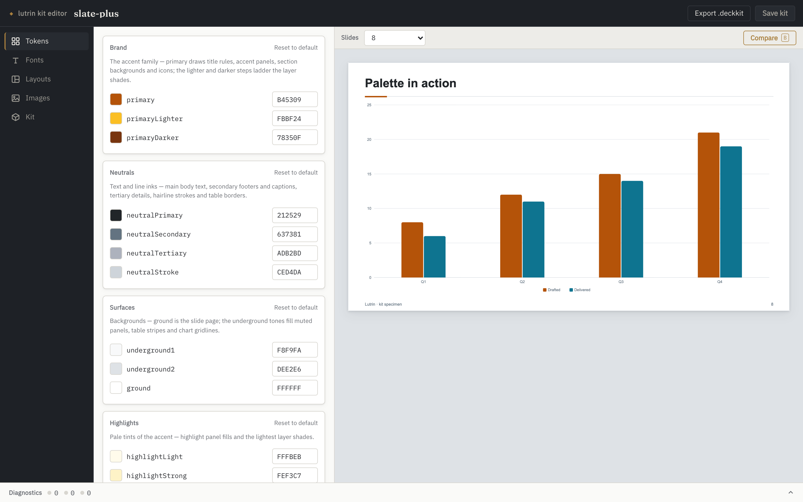
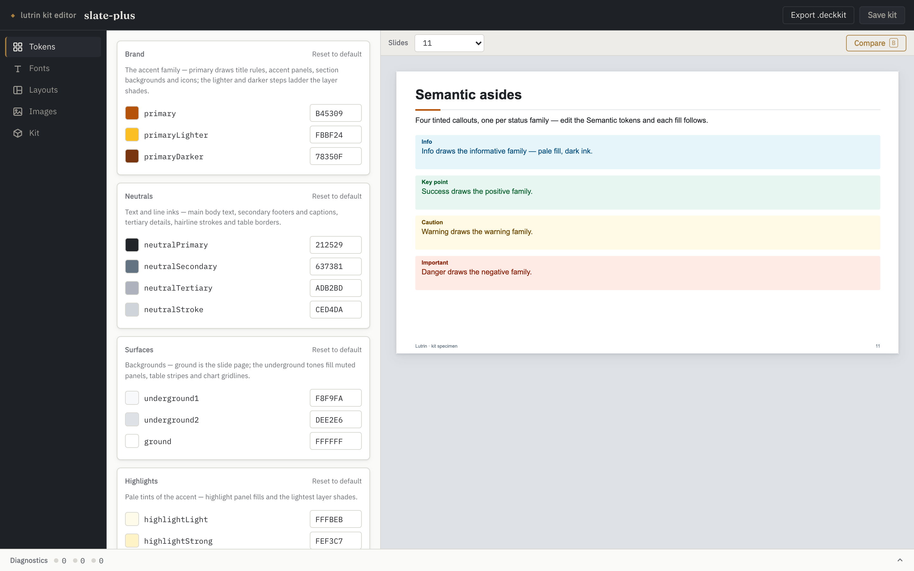
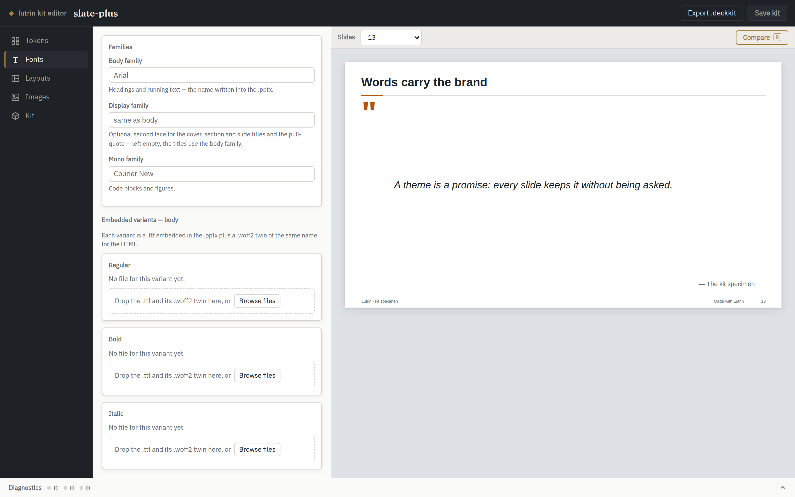
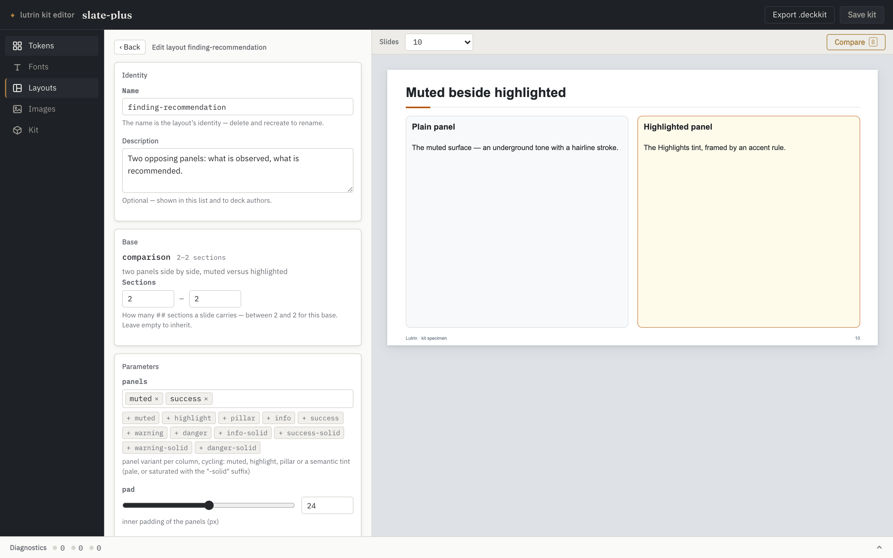
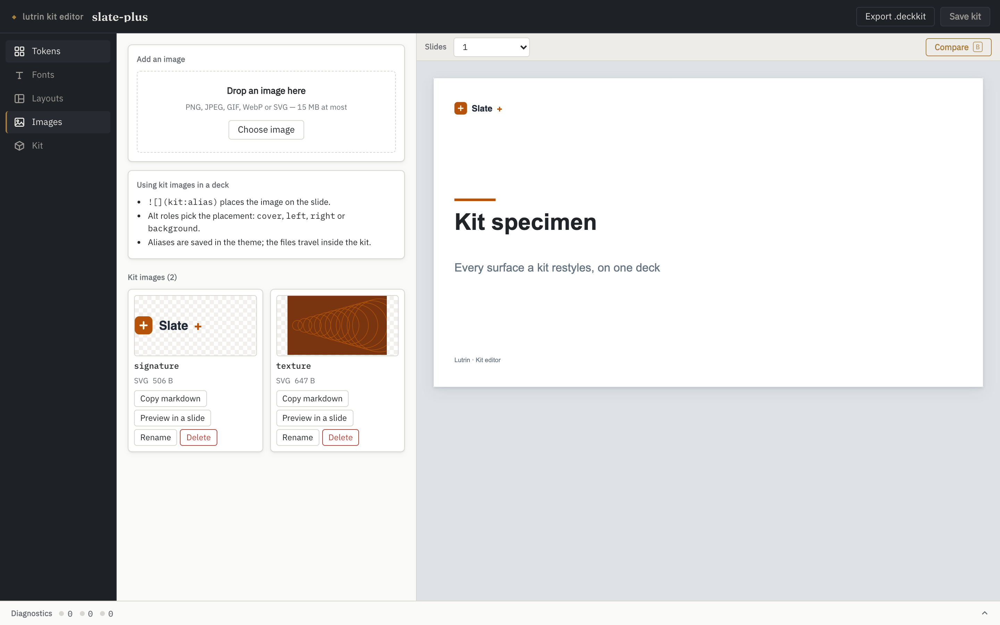
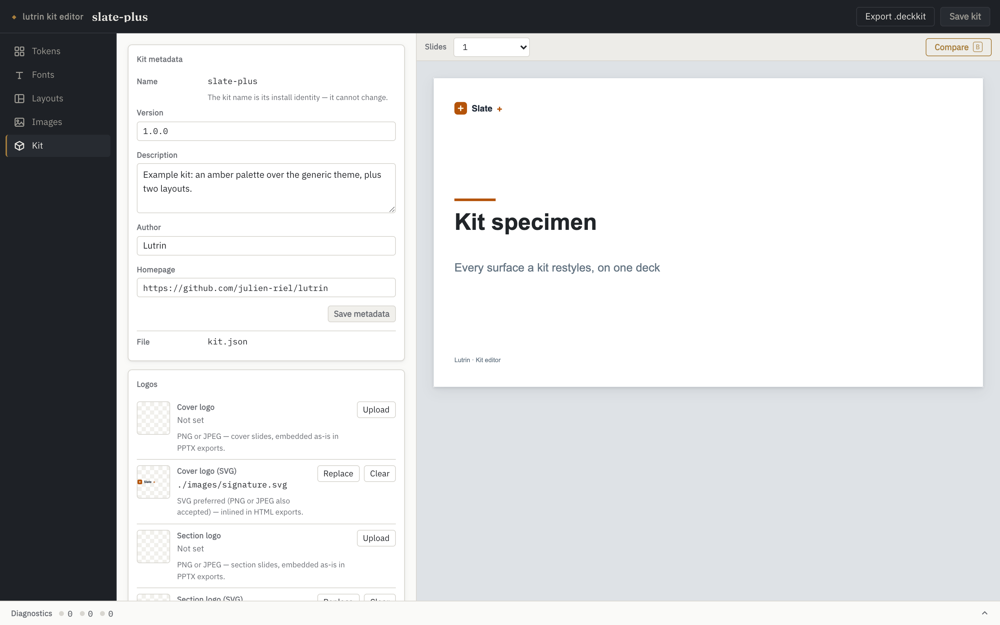
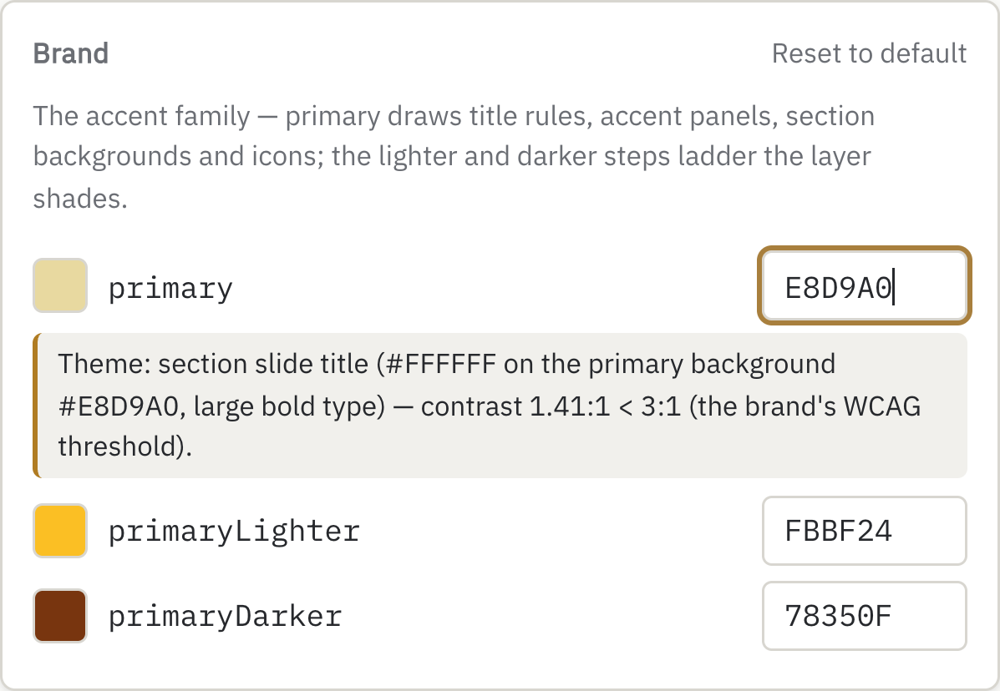
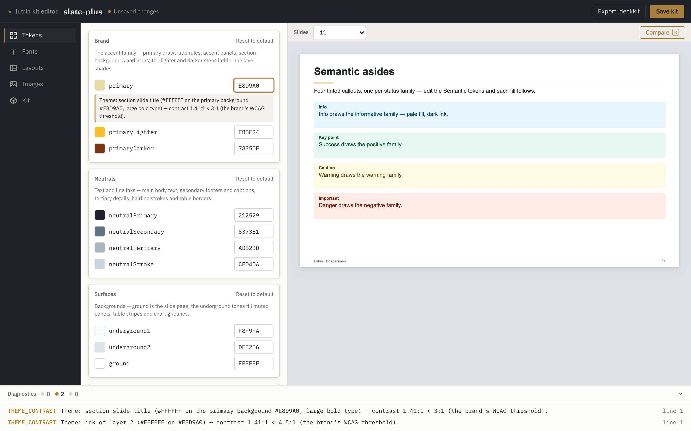

A kit is data: a theme, a few layouts, some fonts and
logos. Editing one used to mean changing a hex, recompiling a deck and
squinting at the result. The kit editor puts every token beside a
specimen deck the real engine just compiled — the same
compiler that runs lutrin build — and answers before you
save anything.
lutrin kit edit brand-acme
A local server · binds 127.0.0.1 only · nothing leaves your machine

The Tokens panel and the compiled specimen. The chart's bars
are the kit's chartColors, in order.
These are screenshots, not a live demo — the editor is
a UI in front of a local Node server that compiles and writes files, and
this page is static bytes on GitHub Pages. Every shot below is the real
SPA, driven by
scripts/kit-editor-shots.mjs,
with previews compiled by the engine at HEAD. Nothing is
mocked up or retouched. To use it, run the command above.
what it replaces
A kit is JSON. That was the problem.
Nothing about the format changed — a kit is still
kit.json, theme.json,
layouts/*.json and the files under fonts/ and
images/. What changed is that you no longer have to hold the
result in your head:
pick a hex, save the file, recompile a deck, squint
find out at delivery that the accent can't carry white text
ship a font name the .pptx can't honour
hand-write a layout definition the compiler then refuses
lose track of which image in images/ anything still uses
Every one of those is now answered while you are still
deciding. The editor reads and writes the same files you always could,
and everything it produces can still be written by hand.
five panels
One panel per thing a kit owns.
Colours, type, layouts, images, identity. The preview on
the right is always the same specimen deck — metrics, splits, charts,
callouts, tables, timelines: every surface a kit restyles, on one deck —
compiled with your working state overlaid in memory.
Tokens
The theme's colours, grouped by the domains they actually serve — brand,
neutrals, surfaces, highlights, semantic — plus the chart palette
(ordered, and reorderable), the layer shades and the trend inks. Each row
pairs a native colour picker with a hex field, and each group can be
reset to the engine's default.

Edit a semantic token and all four callout fills follow.
Fonts
Two family choices — body and mono — and three embedded variants.
Each variant is a .ttf plus a .woff2
twin of the same name: the .ttf is what gets
embedded in the .pptx, the .woff2 is what the
HTML output inlines. The panel shows the pair status of every declared
variant and names a missing twin for what it is. Uploads are checked
against their actual bytes, and the family name read from the
.ttf itself is proposed when it disagrees with the theme.

A family name with no embedded files is a promise the
.pptx cannot keep — the panel says so rather than letting
you find out on someone else's machine.
Layouts
A kit layout is a named preset of one of the engine's
generators — a base plus the parameters that base publishes —
never free geometry: the engine still owns placement, exactly as it does
in a deck. "New layout" picks a base, then fills a form generated from
that base's parameter schema, with its own live preview. Definitions are
validated by the very code that loads kit layouts, so what the editor
refuses is exactly what a compile would refuse.

Editing a layout: the base it presets, the sections it
accepts, and the parameters that base publishes.
Images
Every image the theme names, plus the orphans sitting in
images/ that nothing references yet. An upload ends in an
alias written into the theme, and decks then place it
with the usual roles — . Once
resolved, a kit image behaves exactly like a local one: same placement by
the engine, embedded in the .pptx, inlined in the HTML.

Each card copies the markdown that places it, previews it on
a throwaway slide, or adopts an orphan under a fresh alias.
Kit
The manifest's display metadata — version, description, author, homepage
— written straight to kit.json. The name is
locked: it is the kit's install identity, so renaming is a new
kit, not an edit. The four logo slots live here too, cover and section,
each with a bitmap for .pptx exports and an SVG variant for
HTML. Export .deckkit packs the same archive
lutrin kit create produces and surfaces its SHA-256 — the
digest kit install prints on the receiving side.

The identity a kit installs under, and the archive it travels
as.
the point of the whole thing
It answers while you are still picking.
The engine checks the WCAG thresholds on every
recompile — main text on the page, chart colours, layer inks, callout and
trend inks. So a colour that breaks legibility does not wait for a
review: the warning lands under the row that caused it, named, measured,
with the pair it failed on.

A pale accent, typed into primary. The engine
measured it against the brand's own threshold and said which surface
breaks.

Same edit, whole window: two findings in the drawer, and
Unsaved changes in the top bar — nothing has touched the disk.
Compare, press‑and‑hold
Hold the Compare button — or the B key — to see the last
saved kit; release to come back to your edits. A
before/after on the same slides.
Drafts, then a save
Theme and layout edits drive the preview immediately and touch
nothing on disk until Save kit. File uploads are immediate:
a binary either is in the kit or is not.
It watches the folder
An edit made outside — your text editor, a git checkout
— reloads when nothing is at stake, and raises a conflict banner when
you have unsaved work.
Clickable findings
The drawer counts errors, warnings and infos from the kit and from
the last compile. Clicking one jumps to the panel it points at.
running it
One command, and a port that stays home.
lutrin kit edit brand-acme
A bare name designates an installed kit — the ones
lutrin kit list shows. Pass a path
(./brand-acme) to edit a directory in place.
lutrin kit edit ./brand-acme --create
Scaffolds a brand-new kit: kit.json, a
theme.json copied from the engine's default theme — so you
start from the exact tokens the engine uses, not an empty object — and
the layouts/, images/ and
fonts/ directories. It never overwrites an existing kit.
The default port is 4322, so a deck
preview (4321) and a kit editor run side by side; a busy port moves to the
next free one and says so.
It writes to your disk, so the server is built for that
binds 127.0.0.1 only, and refuses requests whose
Host is not local — the DNS-rebinding guard it shares
with lutrin preview;
refuses any mutating request whose Origin is not the
editor's own, so a malicious page in the same browser cannot rewrite
your kit through you;
every read and write is confined to the kit
directory — an escaping path or symlink is a 404;
uploads are size-capped and checked against magic
bytes: the extension promises a format, the first bytes must
keep the promise;
kit files are served inert — a strict CSP, nothing
executable — because a kit is data even when displayed.
It is a workbench, not a service: do not expose the port
beyond the machine. The guards above assume a local browser.
the deal, again
Data, never code.
A kit stays what it always was. The editor reads and writes
plain files, and an installed kit still runs nothing — that promise is
what makes it safe to accept one from someone else. Everything the editor
produces can be written by hand, and everything written by hand shows up
in the editor.